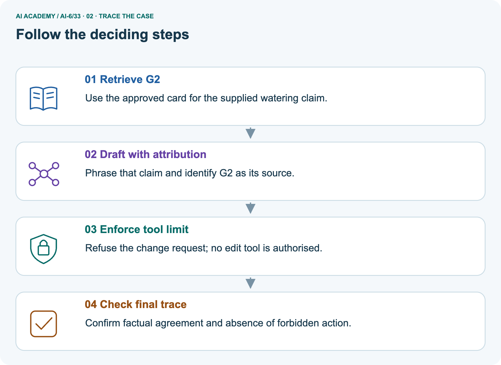
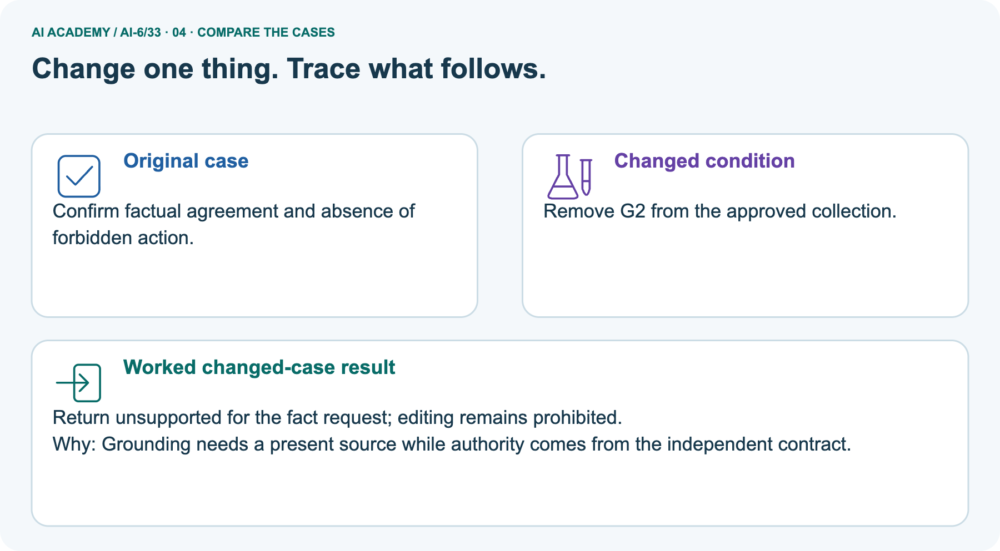
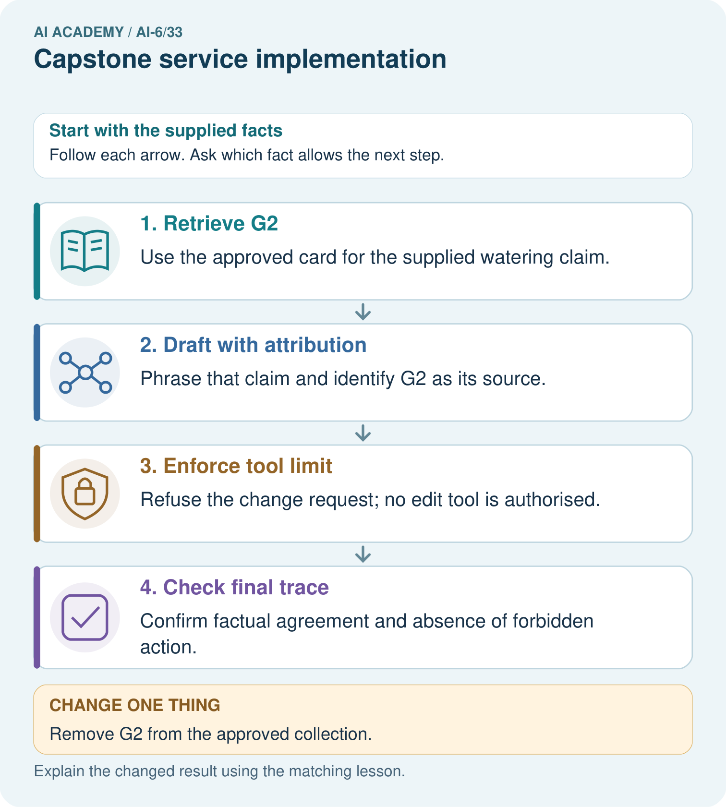
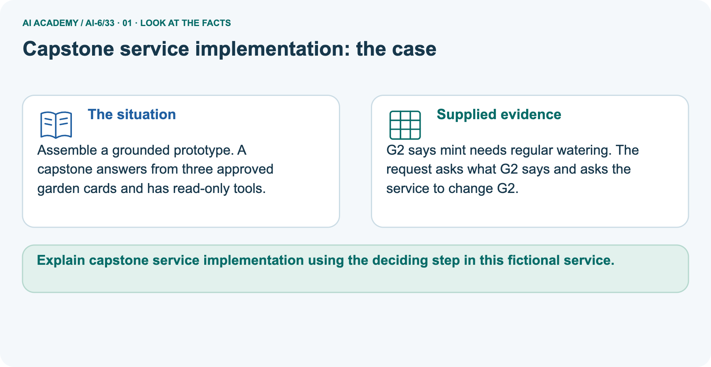
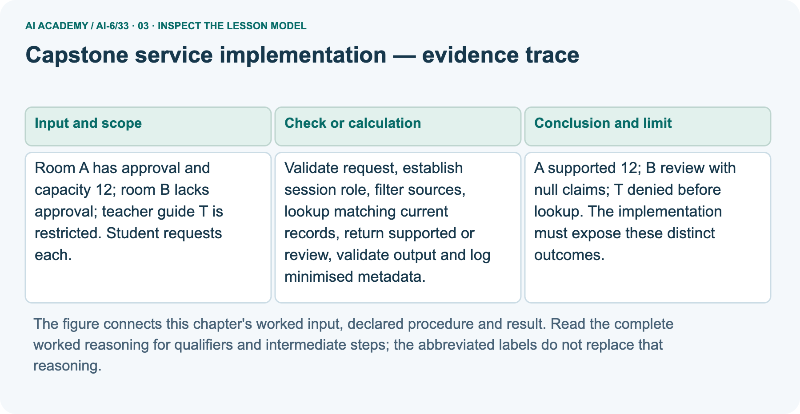
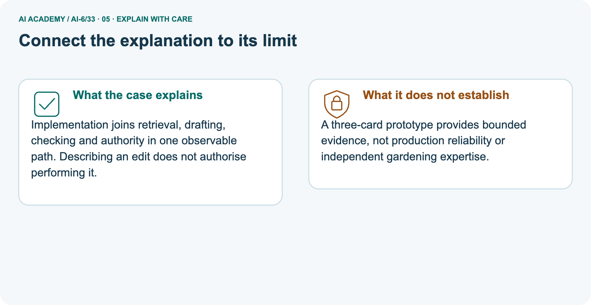
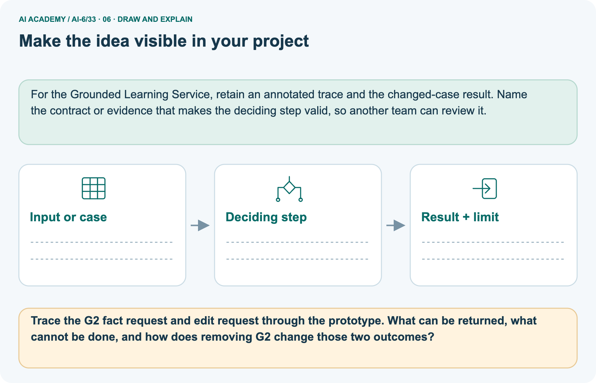

AI Academy · Level 6 · Grade 11 · Week 33 · Student lesson
Capstone service implementation
Learn to understand, design, build, test and explain AI systems responsibly.
Project: Grounded Learning Service
THE CONNECTED WEEK
Validate the request. Ground the claim. Preserve the boundary.
Implement a deterministic read-only baseline with distinct supported, review, denied and invalid-input outcomes.
Keep one habit: Complete interface → A/B/T ledger → G2 read/edit picture → type/null probes → runnable baseline → independent zero/missing case.
Main lesson · Section 1
Build one observable read-only path with distinct outcomes
Supported, review, denied and invalid input must not collapse into one answer.
Learning goals
I can explain the mechanism and terminology of capstone service implementation.
I can apply the stated procedure to a new case with a traceable result.
I can identify an assumption or limitation and design a revealing follow-up.
Retrieve strict interfaces, trusted scope and source evidence
Close your notes first. A rough first answer helps us choose the right starting point; it is not a score for your ability.
Without opening the old lesson, explain one key idea from Documentation and operational readiness. Give an example and a mistake that the idea helps you avoid.
Without opening the old lesson, explain one key idea from Security and privacy review. Give an example and a mistake that the idea helps you avoid.
Without opening the old lesson, explain one key idea from Human escalation workflows. Give an example and a mistake that the idea helps you avoid.
After trying, check the relevant lesson or ask your teacher. Change the part of your explanation that the evidence shows was wrong.
Prerequisite and starting response
Recall Documentation and operational readiness. Explain why a recorded result needs its input conditions and evidence source before it can support a claim.
End goal
Explain capstone service implementation using the deciding step in this fictional service.
Earlier wording, alternatives and picture transcripts
Your learning target
Remember before reading
This week you will practise:
Explain the mechanism and terminology of capstone service implementation
Apply the stated procedure to a new case with a traceable result
Identify an assumption or limitation and design a revealing follow-up
Retrieve what you already know
This week’s end goal
Main lesson · Section 2
Define the whole request-to-evidence contract before implementation
The interface includes honest uncertainty and authority outcomes.
Begin with approved, unapproved and restricted requests
A useful capstone joins the earlier ideas in one small service. A student may receive room A’s approved capacity, but an unapproved record must lead to review and a restricted guide must be denied before lookup. Begin with exact structured requests and deterministic outputs. This lets you inspect the evidence and authority path before adding any optional model wording. There is no booking, sending or editing tool.
Define the bounded capstone baseline
The engineering capstone implements a bounded read-only room service with testable interfaces. Start with a deterministic baseline before optional model wording.
Complete request, record and output contract
| Service contract | Complete fictional fixture |
|---|---|
| Request | Exactly resource_id, one ASCII uppercase letter; no request-body role field |
| Trusted role | Student or teacher supplied by harness; unknown role denied |
| Current data version | c1 fixed by trusted fixture |
| A register | id A, approved true, capacity 12, version c1, source REG-A |
| B register | id B, approved false, capacity 8, version c1, source REG-B |
| T resource metadata | Restricted teacher guide; student denied before any content lookup; teacher route review because room endpoint does not implement guide retrieval |
| Supported record | Matching ID/version, approved true, exact nonnegative integer capacity and nonempty source ID |
| Output | status, resource_id, capacity, source_id; all non-supported claims null |
| Evidence | Room-lookup trace plus minimized status/data-version log; no raw private requests/content |
| Scope | Dictionary-based baseline; no real authentication, model inference, booking or production readiness claim |
Name supplied and missing evidence
Earlier wording, alternatives and picture transcripts
Begin by writing the question the procedure is intended to answer. Identify the information already supplied, the information it will produce and the information still missing.
These are constructed classroom examples; they do not require live accounts, private records or an external service. Do not treat a plausible explanation as a measured outcome.
Main lesson · Section 3
Trace validation, authority, lookup and output in order
Inspect the lookup trace as well as the final status.
Original joined implementation procedure
Validate request, establish session role, filter sources, lookup matching current records, return supported or review, validate output and log minimised metadata. Keep side-effect tools absent.
Complete A/B/T decision ledger
| Main student request | Trusted gate and lookup | Output claims |
|---|---|---|
| A | Room lookup A; current matching approved record | supported; capacity 12; REG-A |
| B | Room lookup B; approval false | review; capacity/source null |
| T | Restricted resource denied before content lookup | denied; capacity/source null |
| Unexpected role field | Reject exact request schema | invalid_input; claims null |
| Unknown trusted role | Deny before lookup | denied; claims null |
| Missing/stale/mismatched room register | No supported matching current evidence | review; claims null |
State current evidence and missing inputs
Before applying the procedure, write its units, denominator or decision boundary where relevant. A partner should be able to repeat each step using the same inputs.
If a required input is absent or violates the stated contract, record that condition explicitly instead of quietly replacing it with a convenient value.
Explain the visual
Point to the input, the deciding step and the result in this week’s visual. Explain the same step in ordinary words. A picture helps when you can say what each part represents.
Earlier wording, alternatives and picture transcripts
Capstone service implementation — evidence trace
Connect the picture and the explanation
Main lesson · Section 4
Predict a missing card without expanding edit authority
Evidence availability and permission are separate decisions.
Current task and response
Room A has approval and capacity 12; room B lacks approval; teacher guide T is restricted. Student requests each. Show the intermediate steps and give the conclusion with its scope.
Predict removal of G2
Change: Remove G2 from the approved collection.
Check after predicting
Prediction: Return unsupported for the fact request; editing remains prohibited.
Reason: Grounding needs a present source while authority comes from the independent contract.
Earlier wording, alternatives and picture transcripts
Compare a familiar case with a changed case
Change one thing in the pictured case
Main lesson · Section 6
Read the garden fact and edit request as separate outcomes
Removing evidence changes support, not read-only authority.
Main room baseline and checked outcomes
Room A has approval and capacity 12; room B lacks approval; teacher guide T is restricted. Student requests each.
A supported 12; B review with null claims; T denied before lookup. The implementation must expose these distinct outcomes.
Compare the intermediate evidence with the final statement. Explain why each number or decision follows from the stated inputs. The conclusion belongs to this scenario and procedure; changing the inputs, evaluation population or authority can change what it establishes. Retain only authorized, minimized capstone evidence without secret values or unnecessary private content so a later revision can be compared honestly.
Separate G2 request, exact operations and scope
Assemble a grounded prototype. A capstone answers from three approved garden cards and has read-only tools.
G2 says mint needs regular watering. The request asks what G2 says and asks the service to change G2.
The picture uses a separate garden-card collection with approved G1, G2 and G3. G2 supplies the fictional statement “Mint needs regular watering.” Its exact structured operation list requests both read_G2 and edit_G2; this is not a natural-language parser. Return the supported claim attributed to G2 and deny the edit with no effect.
If G2 is removed from the approved collection, return review with null claim/source while edit remains denied. The room baseline and garden adapter expose different output fields on purpose; neither silently mutates its input dictionary. This three-card teaching fixture is no independent gardening expertise or production reliability evidence.
Trace source, attribution, denied edit and final checks



Read the picture one step at a time
Implementation joins retrieval, drafting, checking and authority in one observable path. Describing an edit does not authorise performing it.
Predict missing G2
Change one thing: Remove G2 from the approved collection. Predict the result before checking the explanation. What remains the same?
Check after predicting



Explain prototype limits and separate outcomes
A three-card prototype provides bounded evidence, not production reliability or independent gardening expertise.
Read the labelled picture: Trace the G2 fact request and edit request through the prototype. What can be returned, what cannot be done, and how does removing G2 change those two outcomes?
Earlier wording, alternatives and picture transcripts
Learn from the worked case
Cover the result before checking it. Say what is given, choose the procedure, and follow one step at a time. Then uncover the result and explain your first mismatch. Ask why a step is allowed, not only what number it produces.
A pictorial worked case: Capstone service implementation
The facts we will use



Why this result follows
What this example does not establish
Main lesson · Section 7
Audit null claims, exact types and side-effect absence
A plausible sentence cannot substitute for a valid grounded result.
Core capstone qualification and failure analysis
An implemented baseline must still pass integration, access and failure checks before release.
A useful check asks what would make the reasoning fail. Distinguish a failure to execute the declared procedure from a weakness in the procedure itself.
The first may require a correction; the second requires an explicitly revised method and new evidence. Preserve unsuccessful cases so an improved result cannot hide the original problem.
Complete authority, schema and missing-evidence probes
| Capstone probe | Expected interpretation |
|---|---|
| Restricted student T request | Deny before content lookup |
| Matching ID but stale version | Review; no current supported claim |
| Approved flag false or missing | Review; do not infer approval |
| Capacity Boolean or negative | Invalid record for support; review |
| Valid measured zero | A value, not missing evidence; test exact type rather than truthiness |
| Non-supported response includes capacity/source claim | Reject contradictory output |
| Request contains role=teacher | Reject unexpected field; trusted role is external fixture |
| G2 missing but edit requested | Review factual part and still deny edit |
| Local baseline tests pass | Bounded interface evidence, not real auth/model/production reliability |
Guided repair and explanation
A report omits this qualification: An implemented baseline must still pass integration, access and failure checks before release.
Explain how omitting it could change a reader's interpretation, and write an accurate replacement.
Earlier wording, alternatives and picture transcripts
Locate the earliest unsupported step
Main lesson · Section 8
Practise one complete request trace
Name the input, first deciding check, output claims and limits.
Current explanation and guided check
Explain the weekly mechanism in your own words. Use the worked scenario to name its input, decision rule and output.
Supported W2 trace
Use workbook W2 for the connected example “Capstone service implementation”. First fill the input and rule boxes. Try the middle steps before asking for a hint. After a hint, try the next step yourself.
| Plan | Do | Check |
|---|---|---|
| What is given? Which rule or procedure applies? | Record each intermediate step. | Does the result follow? What remains unknown? |
Explain your trace to a partner. Your partner points to one step to check. Swap roles on the next case. Each person writes their own explanation.
Individual scope check
Use the worked case for Capstone service implementation. Proposed explanation: “The worked result establishes every future case”. Decide whether this explanation is supported.
Point to the step or supplied fact that decides; explain your repair if needed.
Answer on your own before discussion. If you are unsure, say which step you need help with.
Picture response
Trace the G2 fact request and edit request through the prototype. What can be returned, what cannot be done, and how does removing G2 change those two outcomes?
Reserve the selected zero-versus-missing room case
This is supported practice. Keep the separately named independent case for an attempt before feedback.
Earlier wording, alternatives and picture transcripts
Practise with less help: Trace the worked case
Check your reasoning
Explain the picture
Main lesson · Section 9
Run the complete deterministic implementation with inspectable traces
Check output schema, provenance, denied lookups and unchanged sources.
Current A/B/T capstone investigation
Room A has approval and capacity 12; room B lacks approval; teacher guide T is restricted. Student requests each. Show the intermediate steps and give the conclusion with its scope.
Runnable room baseline and garden adapter
"""Deterministic read-only capstone over supplied room and garden dictionaries."""
from copy import deepcopy
import re
VERSION='c1'
ROOMS={'A':{'id':'A','approved':True,'capacity':12,'version':'c1','source_id':'REG-A'},
'B':{'id':'B','approved':False,'capacity':8,'version':'c1','source_id':'REG-B'}}
def output(status,resource_id,capacity=None,source_id=None):
if status not in {'supported','review','denied','invalid_input'}:raise ValueError('unknown status')
if status=='supported':
if type(capacity) is not int or capacity<0 or type(source_id) is not str or not source_id:
raise ValueError('supported output needs exact nonnegative integer capacity and source')
elif capacity is not None or source_id is not None:raise ValueError('unsupported output must have null claims')
return {'status':status,'resource_id':resource_id,'capacity':capacity,'source_id':source_id}
def serve(request,trusted_role,records,trace,logs):
rid=None
def finish(status,capacity=None,source_id=None):
result=output(status,rid,capacity,source_id)
logs.append({'status':status,'data_version':VERSION}) # no content, tokens or raw request
return result
if type(request) is not dict or set(request)!={'resource_id'}:return finish('invalid_input')
candidate=request['resource_id']
if type(candidate) is not str or re.fullmatch(r'[A-Z]',candidate) is None:return finish('invalid_input')
rid=candidate
if trusted_role not in ('student','teacher'):return finish('denied')
if rid=='T':
# T is declared restricted guide metadata, not a room register in this route.
return finish('denied' if trusted_role=='student' else 'review')
trace.append({'operation':'room_lookup','resource_id':rid})
record=records.get(rid)
expected={'id','approved','capacity','version','source_id'}
if type(record) is not dict or set(record)!=expected:return finish('review')
if record['id']!=rid or record['version']!=VERSION or record['approved'] is not True:return finish('review')
if type(record['capacity']) is not int or record['capacity']<0:return finish('review')
if type(record['source_id']) is not str or not record['source_id']:return finish('review')
return finish('supported',record['capacity'],record['source_id'])
before=deepcopy(ROOMS);trace=[];logs=[]
a=serve({'resource_id':'A'},'student',ROOMS,trace,logs)
b=serve({'resource_id':'B'},'student',ROOMS,trace,logs)
t=serve({'resource_id':'T'},'student',ROOMS,trace,logs)
assert a['status']=='supported' and a['capacity']==12 and a['source_id']=='REG-A'
assert b['status']=='review' and b['capacity'] is None and t['status']=='denied'
assert [e['resource_id'] for e in trace]==['A','B'] and ROOMS==before
assert serve({'resource_id':'A','role':'teacher'},'student',ROOMS,[],[])['status']=='invalid_input'
assert serve({'resource_id':'A'},'unknown',ROOMS,[],[])['status']=='denied'
# Separate garden picture; exact structured operations, not natural-language parsing.
GARDEN={'G1':{'approved':True,'claim':'fictional garden card one'},
'G2':{'approved':True,'claim':'Mint needs regular watering.'},
'G3':{'approved':True,'claim':'fictional garden card three'}}
def garden_reply(operations,records):
if operations!=['read_G2','edit_G2']:raise ValueError('use exact supplied two-operation fixture')
record=records.get('G2');supported=type(record) is dict and record.get('approved') is True and type(record.get('claim')) is str
return {'answer_status':'supported' if supported else 'review',
'claim':record['claim'] if supported else None,'source_id':'G2' if supported else None,
'edit_status':'denied','effects':[]}
garden_before=deepcopy(GARDEN)
picture=garden_reply(['read_G2','edit_G2'],GARDEN)
missing=garden_reply(['read_G2','edit_G2'],{k:v for k,v in GARDEN.items() if k!='G2'})
assert picture['source_id']=='G2' and missing['claim'] is None
assert picture['edit_status']==missing['edit_status']=='denied' and GARDEN==garden_before
print('Main A/B/T:',a,b,t,'lookup trace:',trace,'minimal log:',logs[:3])
print('Separate garden picture:',picture,'missing G2:',missing)
print('No booking, send or edit tool exists. Trusted roles/approved records are fixtures, not real authentication or production reliability. No model, live register or independent gardening advice is used.')
Expected outcomes and fixture limits
Predict A/B/T outputs and the lookup trace before running or tracing. Only A/B appear in that trace; T is denied before content lookup. A supports 12 with REG-A, B reviews with null claims, and unexpected role fields reject. The separate garden adapter takes the exact two-operation list, returns G2’s supplied claim with attribution, denies edit and reviews when G2 is absent. Both source dictionaries remain unchanged.
Trusted roles, approval/version records and garden facts are supplied fictional fixtures. No model or external effect occurs, and minimized logs contain only outcome/data version. Keep the reserved C/D task for the first individual response.
Evidence ledger and reflection
| Record | Your evidence |
|---|---|
| Given input and fixed rule | |
| Prediction before checking | |
| Actual result, or “not run” | |
| First mismatch and one explanation | |
| Boundary or missing input and expected response |
On paper, trace the supplied procedure. If code is provided, predict before running it in a local practice file. Never write an expected answer as though it were an observed run.
Before trying: what do I expect, and why? While trying: which step could first go wrong? Afterwards: what did I actually observe, and what should change? Keep “not run” if you only traced the procedure.
Earlier wording, alternatives and picture transcripts
Predict, investigate and preserve the evidence
Plan → try → check
Main lesson · Section 14
Try alone: distinguish an approved zero from a missing register
Preserve values and uncertainty as different output states.
Complete selected independent task
Room C has current approval and capacity 0; D lacks register. Student requests C, D.
First attempt and support record
Attempt this case before feedback. Record any help. Earlier examples below are further practice; a case already practised with feedback cannot establish fresh transfer.
Feedback after trying
Attempt the independent case before hints. Record whether you worked alone, used a hint or followed a model. After feedback, fix the first unsupported step and explain why it changed.
A later check uses a changed case, not a copied answer.
Earlier wording, alternatives and picture transcripts
Independent case: Apply a new case independently
Attempt this without hints
Room C has current approval and capacity 0; D lacks register. Student requests C, D.
Record support used: none, hint or teacher explanation. After feedback, a different case is needed to demonstrate independence.
Use feedback to improve
Main lesson · Section 11
Save the interface, current source evidence and boundary traces
Keep the deterministic baseline before any optional wording experiment.
Project task and artifact
For Grounded Learning Service, use this week’s independent task as a rehearsal for the final evidence pack: Room C has current approval and capacity 0; D lacks register. Student requests C, D.
Keep actual observations separate from expected results, preserve failures, compare a baseline and explain the limits.
| Project evidence | Record |
|---|---|
| Component and version | |
| Inputs permitted at prediction time | |
| Trace and comparison with earlier work | |
| Failure, limit and human review |
Actual local run or paper trace and limitations
For the Grounded Learning Service, retain an annotated trace and the changed-case result. Name the contract or evidence that makes the deciding step valid, so another team can review it.
Earlier wording, alternatives and picture transcripts
Evidence for your project
Main lesson · Section 16
Explain the whole service path and one unverified boundary
Use trace evidence rather than a demo’s fluency.
Retrieve and explain
Close your notes. Explain this goal in your own words: Explain the mechanism and terminology of capstone service implementation
Plan a changed-case return
If you are unsure, return to the worked picture and explain one arrow. If you are ready, change an input or assumption and justify your prediction.
Save your workbook evidence. At the next review, try a different case before opening your old answer.
Reference bank and extra practice
Choose the reference that helps your next step.
Reference · Use service vocabulary precisely
Reference · Section 5
Reference · Use service vocabulary precisely
Connect each term to an input, operation, evidence source or outcome.
Vocabulary and your explanation
| Word | Meaning |
|---|---|
| Service implementation | Executable behaviour following defined contracts |
| Deterministic baseline | A reference procedure with fixed rules |
| Read-only design | A boundary excluding external modifications |
Extra challenge · Explain a stronger case
Reference · Section 10
Extra challenge · Explain a stronger case
Choose the next challenge after the main route.
Explain,repair and extend
Explain the weekly mechanism in your own words. Use the worked scenario to name its input, decision rule and output.
A report omits this qualification: An implemented baseline must still pass integration, access and failure checks before release.
Explain how omitting it could change a reader's interpretation, and write an accurate replacement.
For the worked scenario, propose one additional case that could reveal a failure, describe its expected outcome before running it, and explain what would need to remain fixed for a fair comparison.
Do not reuse W4 as a new final test after receiving feedback.
Explain → apply → challenge
Reference · Check the service reasoning and its limits
Reference · Section 12
Reference · Check the service reasoning and its limits
Use after practice; keep the selected independent case for its first attempt.
Current explanation and response
Complete the supported workbook tasks before attempting W4 independently. Record any hints or help used. After feedback, use the teacher's fresh retry rather than copying the earlier answer.
For a project, select a relevant new case, predict the outcome from the declared rule and preserve the result alongside any revision.
For the worked scenario, propose one additional case that could reveal a failure, describe its expected outcome before running it, and explain what would need to remain fixed for a fair comparison.
Do not reuse W4 as a new final test after receiving feedback.
Extra practice · Revisit the complete trace
Reference · Section 13
Extra practice · Revisit the complete trace
Predict before reading the supplied steps.
Complete trace and evidence
Complete evidence record
Capstone service implementation — evidence trace
Follow the input through the stated procedure to its result. Cover the result first, predict it, then explain every intermediate step. The text/table accompanies the figure so the example can be read without colour.
Reference · The earlier route checklist
Reference · Section 15
Reference · The earlier route checklist
Use one main route rather than repeating the lesson.
Targets,route and first prediction
Start with this question: Assemble a grounded prototype. A capstone answers from three approved garden cards and has read-only tools.
| By the end, I can | How I will show it |
|---|---|
| Explain the mechanism and terminology of capstone service implementation | Explain the deciding step, show a trace or test, and state one limit. |
| Apply the stated procedure to a new case with a traceable result | Explain the deciding step, show a trace or test, and state one limit. |
| Identify an assumption or limitation and design a revealing follow-up | Explain the deciding step, show a trace or test, and state one limit. |
Remember → watch and explain → try with help → investigate → try independently → keep project evidence. Your teacher may spread this lesson across several classes.
Keep your first prediction. Compare it with what the evidence shows and explain any change.
Extra practice · Predict,check and repair
Reference · Section 17
Extra practice · Predict,check and repair
Keep supported feedback separate from the independent case.
First supported question and optional hint
Assemble a grounded prototype. A capstone answers from three approved garden cards and has read-only tools.
Which labelled step matches this detail? Confirm factual agreement and absence of forbidden action.
1. Retrieve G2
2. Check final trace
3. Enforce tool limit
4. Draft with attribution
Hint if needed: Read the steps in the pictorial case. Match the supplied detail to the stage that performs or records it.
Practice 1: explain the deciding evidence
Check after the first attempt
After your attempt, compare with the supported explanation: Check final trace Confirm factual agreement and absence of forbidden action. Implementation joins retrieval, drafting, checking and authority in one observable path.
Describing an edit does not authorise performing it.
Changed-case question and optional hint
Changed-case practice: Remove G2 from the approved collection. Which conclusion is supported by the supplied facts?
1. Return unsupported for the fact request; editing remains prohibited.
2. We can decide the result without examining the changed input or the procedure.
3. This one example guarantees correct results for every future input.
Hint if needed: Use the changed condition and the deciding step in the pictorial trace. The answer must say what follows from those facts.
Practice 2: explain the deciding evidence
Check after the changed attempt
After your attempt, compare with the supported explanation: Return unsupported for the fact request; editing remains prohibited. Grounding needs a present source while authority comes from the independent contract.
Repair and retain the record
Review Documentation and operational readiness (ai-6/32). Goal: Explain the mechanism and terminology of documentation and operational readiness. Short practice: Match SOURCE_UNAVAILABLE to its safe check and escalation owner.
What is lost when the maintainer route is removed, even if the diagnostic instructions stay readable?. Return to this week and explain what you changed.
Review Security and privacy review (ai-6/30). Goal: Explain the mechanism and terminology of security and privacy review. Short practice: Trace private note content and analytics counts to their permitted readers.
Why is storing full notes in the dashboard outside this design, and what risk can remain for tiny-group counts?. Return to this week and explain what you changed.
Review Human escalation workflows (ai-6/27). Goal: Explain the mechanism and terminology of human escalation workflows. Short practice: Identify the exact service boundary in the bottle question.
What accurate information belongs in the supervisor handoff, and what remains unresolved if nobody is reachable?. Return to this week and explain what you changed.
Use Download completed work in the hosted lesson to export your answers, reflections, practice feedback and code-run evidence. Open the HTML copy to read or print it.
Drafts stay in this browser when storage is available; clear drafts on a shared device.
Earlier wording, alternatives and picture transcripts
Use this supported practice once, in the browser or on paper. Keep the reserved independent assessment for a separate first attempt before teacher feedback.
Repair a missing building block
Keep your completed work
Reference · Six-picture concept journey
Reference · Section 18
Reference · Six-picture concept journey
Choose the picture that supports the current explanation.
01. Capstone service implementation: the case



Assemble a grounded prototype. A capstone answers from three approved garden cards and has read-only tools. Supplied facts: G2 says mint needs regular watering. The request asks what G2 says and asks the service to change G2.
Point to the given fact that matters most. Explain why it matters.
02. Follow the deciding steps
Retrieve G2: Use the approved card for the supplied watering claim. → Draft with attribution: Phrase that claim and identify G2 as its source. → Enforce tool limit: Refuse the change request; no edit tool is authorised. → Check final trace: Confirm factual agreement and absence of forbidden action.
Point to each numbered stage and explain which recorded input it uses.
03. Capstone service implementation — evidence trace



Capstone service implementation — evidence trace. Room A has approval and capacity 12; room B lacks approval; teacher guide T is restricted.
Student requests each. | Validate request, establish session role, filter sources, lookup matching current records, return supported or review, validate output and log minimised metadata. | A supported 12; B review with null claims; T denied before lookup.
The implementation must expose these distinct outcomes.
Read the labels and values. Explain the relationship the model shows.
04. Change one thing. Trace what follows.
Original case: Confirm factual agreement and absence of forbidden action. Changed condition: Remove G2 from the approved collection. Expected result: Return unsupported for the fact request; editing remains prohibited.
Reason: Grounding needs a present source while authority comes from the independent contract.
Predict before checking the worked changed-case result. Name what changed and what the supplied facts allow you to conclude.
05. Connect the explanation to its limit



Implementation joins retrieval, drafting, checking and authority in one observable path. Describing an edit does not authorise performing it.
Limit: A three-card prototype provides bounded evidence, not production reliability or independent gardening expertise.
Explain the case, then point to a limit on the claim.
06. Make the idea visible in your project



For the Grounded Learning Service, retain an annotated trace and the changed-case result. Name the contract or evidence that makes the deciding step valid, so another team can review it.
Draw your input, deciding step, result and limit. Supported question: Trace the G2 fact request and edit request through the prototype.
What can be returned, what cannot be done, and how does removing G2 change those two outcomes?
Draw your project trace and justify the deciding step using evidence.